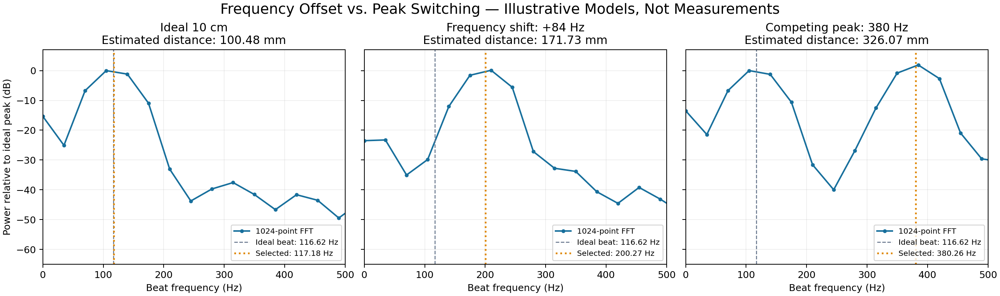

检查对象为15_UsMimoTestBench，未修改RTL、SOF或上位机。实际距离单位cm，测量结果单位mm。原工程使用模拟混频后低频输入；本页不是multiFPGA方波固件验证报告。
可能有固定频率偏移，但单一固定偏移不能解释全部异常点。17.5–50cm拟合：测量mm = 0.982479 × 实际mm + 71.857；R²=0.999129。截距等效约83.80Hz，但不证明真实电路产生了恒定频偏。
| 实际/cm | 测量/mm | 理想拍频/Hz | 由测量距离反推/Hz |
|---|---|---|---|
| 10 | 171.862 | 116.62 | 200.42 |
| 12.5 | 300.795 | 145.77 | 350.78 |
| 15 | 366.320 | 174.93 | 427.20 |
| 17.5 | 245.312 | 204.08 | 286.08 |
| 20 | 268.460 | 233.24 | 313.07 |
以上使用c=343m/s、B=4kHz、T=20ms。实际温度与当次TX参数需用测量日志确认；反推值不是保存下来的实测频谱。

添加一个低频分量与把目标拍频整体加上频偏是不同模型：前者产生额外峰或峰重叠，后者移动目标峰。单独选中100–120Hz干扰一般会报约86–103mm，不能直接解释300–366mm读数；这些读数对应约351–427Hz，必须检查更高的峰、谐波/旁瓣或其他畸变。
原工程RTL扫描数据中，10cm理想拍频116.618Hz，输出116.720Hz，误差+0.087mm；12.5cm输出146.131Hz，误差+0.307mm。它验证理想输入时的数字处理，不排除实际干扰、非线性、群延迟和多径。原代码去帧均值只能移除常量DC，不能移除100Hz等非零频率干扰。
原上位机UART波形为ADC每4点保留1点的IF支路，重算应先按实际波形采样间隔解释，不能直接当作35.807kS/s FFT输入。要精确对齐FPGA，应取得CIC后的672点或回传FFT频谱；PC重算近似谱需标明差异。